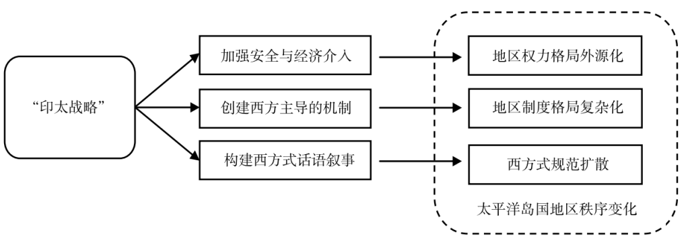

收录于合集

“印太战略”对太平洋岛国地区秩序的影响
作者： 陈晓晨，华东师范大学亚洲和太平洋地区研究中心研究员；常玉迪，中国人民大学国际关系学院博士生。
来源： 《社会科学》2022年第3期
摘要
地区秩序由地区权力格局、地区制度格局和地区规范格局共同构成。美国、澳大利亚和新西兰等西方国家在太平洋岛国地区实施“印太战略”，通过权力投射，巩固了地区军事与安全控制力，增强了经济影响力，促进了地区抗疫合作，使得西方主导性上升与地区权力格局外源化；通过机制构建，构建了以其为主体的地区安全机制网络，还建立了若干西方俱乐部式小多边主义机制，使得地区机制的排他性增强，地区制度格局复杂化；通过话语叙事，建构了一套西方式话语叙事体系，为其提供“合法性”规范，在一定程度上削弱了中国对该地区的介入，并将这套话语叙事体系与海上安全介入等具体行动结合起来。这些变化共同对太平洋岛国地区秩序产生影响。不过，该地区秩序的长期走向还取决于多类行为体的复杂作用与互动。
世界秩序是世界政治中具有全局性、长期性和战略性的重大问题，也是研究当下变革时代的重要切入点之一。地区秩序是世界秩序的子集。冷战结束后，地区的重要性不断提高，乃至如彼得•卡赞斯坦（Peter Katzenstein）所说，我们处在一个“地区构成的世界”。因此，研究地区秩序及其变化是认识当下世界秩序的重要路径。
太平洋岛国地区（Pacific Islands Region，PIR）主要由14个太平洋岛国（Pacific Island Countries，PICs），兼由8个太平洋岛屿领地（Pacific Island Territories，PITs）共同组成。虽然该地区陆地面积小，人口少，相当长时期“处在世界的边缘地带”，但近年来在国际事务中的重要性不断上升。在此背景下，2009年至2017年间，太平洋岛国对本地区秩序的主导权有所上升，太平洋岛国引领并广泛参与的太平洋岛国地区主义显著发展，“大海洋国家”成为太平洋岛国自我认同的新定位，澳新等西方国家对该地区的主导性有所下降。
不过， 自从美国等西方国家开始在太平洋岛国实施“印太战略”，太平洋岛国地区秩序的演进出现了新趋势：在地区权力格局上，西方的主导性重新上升，特别表现为美国的主导性增强；在地区制度格局上，西方建立了若干以其为主体的地区安全机制，使得地区机制排他性增强；在地区规范格局上，西方在该地区构筑了一套冲突性话语叙事体系。 短期看，西方国家强化了对太平洋岛国地区秩序的控制，但对这种变化的原因还欠缺系统分析。有鉴于此，笔者认为有必要系统探讨“印太战略”对太平洋岛国地区秩序的影响，以及这种影响产生的路径与具体过程。
01
概念与文献回顾
本文首先简述关于世界与地区秩序及其构成的既有文献，然后对地区秩序及其变化进行界定，最后尝试概括学界对当前太平洋岛国地区秩序的讨论。
近年来，一些学者有意识地从认识论角度出发，理解和认识世界秩序的构成和演变。阿米塔•阿查亚（Amitav Acharya）从高度（权力的分配）、长度（秩序的程度和扩散）、深度（秩序的质量、活力和合法性）和时间（秩序的短暂性）四个维度观察他所称的“复合世界秩序”江忆恩（Alastair Iain Johnston）以归纳法将其国际秩序概念操作化分解为建构性秩序、军事秩序、政治发展秩序、社会发展秩序、国际贸易秩序、国际金融和货币秩序、环境秩序以及国际信息秩序。在国内学者中，秦亚青认为物质性权力、制度性权力和合法性权力支撑了特定的世界秩序。贺凯和冯惠云将秩序分为规范层次、权力层次与制度层次三个层次类型。至此，学界对世界秩序及其构成的认识论界定逐渐形成共识。
学界对地区秩序的理论探讨也逐渐清晰化。塔尼娅•博泽尔（Tanja A.Börzel）和托马斯•里塞（Thomas Risse）等欧洲学者更强调地区化（地区内聚力与互动）和地区主义（地区制度）的多种组合构成地区秩序。门洪华、徐秀军和顾炜等学者认为地区权力结构、地区机制与地区认同是考察地区秩序的要件。总之，学界对世界与地区秩序及其构成的界定已取得一定共识，认为地区权力格局、地区制度格局和地区规范格局是构成地区秩序的三个主要维度。
基于前述文献， 本文按照认识论路径，将地区秩序定义为由地区权力格局、地区制度格局和地区规范格局三个维度构成，规制地区行为体的行为和互动的运行状态。其中，地区权力格局指的是地区内外行为体间的政治、经济和军事等领域权力的分配状况，是地区秩序的基础；地区制度格局与地区主义关系密切，是地区治理所需的制度化安排和组织结构，是地区秩序的主要外在表现；地区规范格局则体现为基于地区内价值和观念体系形成的共同的规范准则，是地区秩序的情感内化和叙事表达。
地区秩序变迁的动力和机理是一项重要研究议程。一些学者以结构主义视角，强调全球秩序对地区秩序的影响。例如，卡赞斯坦认为，地区核心国家与“美国帝权”之间的联系，是不同地区秩序差异的背景。另一些学者强调了施动者（Agent）的施动性（Agency）对秩序变迁的作用。阿查亚将施动性定义为“能够行动或者使用权力的能力、条件或状态”，认为施动者具有推动秩序变化的能力，从而以施动性为因，阐释了“什么塑造了全球与地区秩序”的问题。
由此，本文将地区秩序的变化定义为地区秩序在权力、制度和规范三个维度所发生的改变。这是一种描述性定义，有助于将较为抽象的地区秩序变化分解为多个可观察的维度。本文按照阿查亚等人的视角，认为行为体的施动性是地区秩序变化之因，进而探讨行为体的何种行动怎样塑造了地区秩序变化。需要说明的是，本文没有将地区秩序按不同领域预先分为“地区经济秩序”“地区安全秩序”等，而是首先将地区秩序视为整体，再根据情况分领域考察。
太平洋岛国地区秩序近年来的变化引发了学术界的热烈讨论。学界主要以还原主义视角，考察关键行为体对太平洋岛国地区秩序的影响。目前，西方学界的主流研究遵循“中国冲击—西方反应”路径，认为中国是太平洋岛国地区现存秩序的挑战者，而“印太战略”是对“中国冲击”的反应，将地区秩序的变化视为大国权力博弈特别是所谓“中国地缘政治影响力”的结果，聚焦“影响力谁大”和“谁能赢”的问题。不过，这类研究的缺陷在于从西方视角出发，将中国在太平洋岛国地区加强存在视为先验的原因，反而忽视了西方自身作为变量对太平洋岛国地区秩序的影响。也有学者着重关注西方盟友内部关系调整对地区秩序的影响。不过，这仍然是西方视角下太平洋岛国地区秩序的片段，缺乏从地区秩序构成的角度对“印太战略”影响的全方位多维度考察。国内学界对“印太战略”在太平洋岛国地区的实施已有不少研究，但还缺乏关于地缘政治新环境背景下的不同行为体如何对太平洋岛国地区秩序产生影响的专门分析。
02
在太平洋岛国地区实施“印太战略”的主要行为体与影响机制
“印太战略”在太平洋岛国地区的实施，主要表现为美国以“全政府方式”推行“印太战略”、澳大利亚在“印太战略”下推行“太平洋升级”（Pacific Step- up） 战略以及新西兰将其“太平洋重置”（Pacific Reset）战略纳入“印太战略”之下，通过权力投射（Power Projection）、机制构建（Institution-building）和话语叙事（Narrative Discourse）三条路径，分别对太平洋岛国地区权力、制度和规范格局产生影响。
2.1 “印太战略”的主要行为体及主要表现
美国、澳大利亚和新西兰（统称“美澳新”，ANZUS）是在太平洋岛国地区实施“印太战略”的主要行为体。这三个国家不仅在太平洋岛国地区进行经济和安全等领域的权力扩展，而且战略性与目的性较强，均有意识地将“印太战略”应用于太平洋岛国地区。
美国在太平洋岛国地区实施“印太战略”的战略性和目的性最强。2018年2月制定的《美国“印太战略”框架》明确了“印太战略”在地理范围上包含太平洋岛国地区。2019年6月，美国国防部发布《“印太战略”报告》，首次公开将太平洋岛国列为“印太战略”“至关重要的组成部分”，表示将“重振”美国对太平洋岛国的介入，提升太平洋岛国作为美国安全伙伴的地位。2019年8月，美国国务院宣布发起“太平洋承诺”（Pacific Pledge），成为美国在太平洋岛国地区实施“印太战略”的重要经济工具。2020年，新冠肺炎疫情全球大流行后，美国内政部、国务院等部门宣称，以“全政府方式”支持太平洋岛国抗疫和恢复经济。拜登上台后，美国继续以“全政府方式”在太平洋岛国地区实施“印太战略”。2022年2月，拜登政府发布了《美国印太战略》文件，进一步突出了太平洋岛国地区在美国“印太战略”中的地位。
澳大利亚在太平洋岛国地区实施“印太战略”的主要战略工具是“太平洋升级”。该战略在澳大利亚《2017年外交政策白皮书》中首次提出，旨在强化在太平洋岛国的战略存在。2018年11月，澳大利亚总理斯科特•莫里森（Scott Morrison）重新定义了“太平洋升级”，与“印太战略”结合更紧密。此后，澳大利亚在外交、经济、安全与地区抗疫合作等多方面，推进“太平洋升级”的实施。
新西兰与美澳有一定区别，其路径为先推出针对太平洋岛国地区的“太平洋重置”战略，后将其纳入“印太战略”之下。2019年开始，新西兰一步步向“印太战略”靠拢，2020年2月提出了一整套关于新西兰参与“印太战略”的原则立场，并将太平洋岛国视为新西兰实施“印太战略”的关键地区，完成了将“太平洋重置”纳入“印太战略”的过程。
美澳两国是本文聚焦的起主导作用的行为体。其中，美国作为在地理上远离该地区的全球大国，大力加强对该地区的权力投射，是最突出的变量之一；澳大利亚将战略重心从他处转移到近邻地区，力图巩固在该地区的传统影响力；新西兰虽然与美澳之间存在一定的政策差异，但共性大于差异，而且新西兰体量比美澳小，对地区秩序变化所起的作用比美澳也要小。
除了美澳新外，日本、英国、法国、德国等西方国家也加强了对太平洋岛国地区的投入。其中，日本参与了多个美澳新主导的针对该地区的经济项目；英国推出了“太平洋抬升”（Pacific Uplift）战略。不过，这些域外西方国家发挥的作用次于美澳新三国。例如，日本更多扮演从属角色且在“印太战略”下实际投入增量不明显；“脱欧”等因素限制了英国对太平洋岛国的注意力。因此，本文仍将美澳新尤其是美澳视为“印太战略”的主要行为体。
2.2 “印太战略”对太平洋岛国地区秩序的影响机制
本文认为， 美澳新特别是美澳两国在太平洋岛国地区实施“印太战略”，通过权力投射、机制构建和话语叙事三条作用路径，分别由权力资源的跨空间运用、机制的创建、维护与议程设置以及话语叙事的扩散传播这三类行动，分别对太平洋岛国地区的权力格局、制度格局和规范格局产生影响，从而影响太平洋岛国地区秩序。
第一， “印太战略”的权力投射，通过权力资源的跨空间运用，作用于地区权力格局。 权力投射是国际关系中的基本概念之一。任何行为体都会面临权力资源的分配与跨空间运用问题，尤其是像美国这样的全球大国和澳大利亚这样的“中等强国”（Middle Power），将权力资源跨空间运用到哪个或哪些目标地区，都会对目标地区的权力分配格局产生重要影响。 美澳新等国通过强化安全与经济介入等权力资源的跨空间运用，巩固了军事与安全控制力，增强了经济影响力，促进了地区抗疫合作，使得西方主导性上升与地区权力格局的外源化。 外源化是指在地区事务中起主导作用的行为体和驱动力更多来自该地区以外的趋势。
第二， “印太战略”的机制构建，通过机制的创建、维护、议程设置与机制间关系，作用于地区制度格局。 阿查亚将机制构建定义为“国家政府发展协调与合作的框架”，强调了国家作为施动者在机制构建中的主体性。美澳新等国通过建立若干以其为主体的地区安全与经济机制，乃至完全由西方国家构成的俱乐部式“小多边主义”（Minilateralism），使得地区机制排他性增强。排他性增强主要表现为：这些地区机制由西方国家主导，有的是西方国家单独构成，准入缺乏开放性；决策权掌握在出资者（主要为西方国家）手中，参与缺乏包容性，尤其是缺乏本地区的代表性；不少机制尤其是安全机制针对中国，构成了“排他性制度制衡”——从现有制度中将制衡目标国排除在外的战略选择。这些西方主导的新机制与已有的太平洋岛国论坛（PIF）、太平洋共同体（SPC）和太平洋岛国发展论坛（PIDF）等主要地区组织之间关系较为模糊，职能多有重叠，使该地区的制度网络呈现出复杂化的格局。
第三， “印太战略”的话语叙事，通过扩散传播以及与具体行动相配合，作用于地区规范格局。 话语是“产生意义的结构”，是国际关系实践中不可或缺的组成部分；叙事是“行为体将世界合理化并以特定方式有序组织起来的配置工具”。叙事理论认为，叙事总是与权力有关，叙事转化为规范的方式是构成具有“情节”（Plot）的完整故事，而冲突性的故事情节往往由“坏人”（Villain）、“受害者”（Victim）、“困难”（Problem）、“英雄”（Hero）和“道义评判”（Moral Judgement） 5个环节串联起来。故事情节为行为体的特定行为提供合法性解释，将特定的观念加以传播形成特定的地区规范。此外，将话语叙事转化为地区规范还需要与行动相配合，为权力投射与机制构建提供合法性与“黏合剂”，从而对特定的地区秩序起到固化作用。 美澳新等国实施“印太战略”，通过构筑一套冲突性话语叙事体系，通过话语打击中国在该地区的存在，传播西方价值观念，为其权力投射和机制构建提供合法性。
西方主导的地区权力格局的外源化、“排他性制度制衡”推动的地区制度网络的复杂化以及西方影响的地区规范，共同构成了“印太战略”对太平洋岛国地区秩序的影响，使得太平洋岛国地区秩序的三个维度偏离了2009年至2017年间太平洋岛国对地区秩序主导权上升、太平洋岛国自行驱动的地区主义显著发展和太平洋岛国自我认同彰显的态势。

图1 “印太战略”影响太平洋岛国地区秩序的作用机理
需要说明的是，秩序变化往往并非一个或一类行为体单方面施动的结果，而是多个或多类行为体的复杂互动。为简化计，并考虑到美澳新之间共性大于差异，本文将美澳新视为同一类行为体，仅研究这类行为体对单个地区秩序的影响，以实现研究太平洋岛国地区秩序变化这个有限目标，但这套分析框架同样有潜力适用于多类行为体对多层次秩序的复合作用。
接下来，本文将分别探讨“印太战略”通过权力投射、机制构建和话语叙事三条路径，对太平洋岛国地区秩序各个维度的影响。在每个维度中，均按照过程分析法，首先梳理美澳新在相应领域采取的具体行动，评估其所产生的作用效果，然后总结这些行动对地区秩序相应维度的具体影响。
03
权力投射与西方主导性的上升
地区权力格局是地区秩序的基础。在“印太战略”下，美澳新等国加大对该地区的权力投射，构成了改变地区权力格局的显著变量。这意味着域外国家相对域内国家的权力增强，西方对地区政治经济权力格局的主导性上升。
3.1 巩固军事与安全控制力
美澳新加强对太平洋岛国地区的军事与安全介入，是实施“印太战略”的先导，巩固了其在军事与安全领域的控制力。
美国加快了将太平洋岛国与岛屿领地的军事化，将其作军事部署用途，纳入对华战略竞争的框架内，采取的具体行动包括：加强在太平洋岛国地区“第二岛链”特别是关岛和北马里亚纳联邦的军事部署；在帕劳、密克罗尼西亚联邦（密联邦）和马绍尔群岛等国试行“远征前进基地作战”，躲避和反制美军假想的所谓“中国导弹打击”；提高“第二岛链”内外的机动性并进行相应的部署性训练；大幅度提高向太平洋岛国提供军事援助的力度，并加强美式价值观的传播和军警官校友网络的构建。
澳大利亚在“太平洋升级”框架下采取的具体行动包括：加强了与太平洋岛国的双边防务安全合作，2018年6月起先后与所罗门群岛、图瓦卢、瑙鲁、汤加和瓦努阿图等签订或升级双边安全合作协议；推进美军人员参与澳军在太平洋岛国的行动；扩大在美澳军力态势倡议（USFPI）下涉及太平洋岛国地区的联合部署、联合训练、部队轮换与军事演习等。
尽管新西兰军事实力相对有限，但也在“太平洋重置”战略下加强了对太平洋岛国的军事安全投入，具体行动包括：加强并展示新西兰军队对太平洋岛国的投射与介入能力；与澳大利亚联合组建“聚焦太平洋快速反应部队”（Pacific- Focused RRF）；与美国军事合作不断升温，2020年1月起，在“印太战略”下举行新美两军战略与政策磋商。
以上这些都是美澳新采取的军事与安全领域的权力投射举措，展示了美澳新的军事实力，加快了太平洋岛国和岛屿领地军事化，使后者服务于大国战略竞争目的。
3.2 增强经济影响力
加大经济投入是“印太战略”在太平洋岛国地区实施的保障，增强了美澳新等国在该地区的经济影响力。
美国将“太平洋承诺”作为在太平洋岛国地区推行“印太战略”的经济工具，首期援助额为1亿美元。与此同时，美国与帕劳、密联邦和马绍尔群岛三个自由联系国（Freely Associated States，FASs） 进行《自由联系协定》续约谈判，以继续获得美军独享进入自由联系国领土（包括领海和领空）等特殊权力，为此美国须每年向自由联系国提供援助，目前每年援助额约为对帕劳1.3亿美元、对密联邦1.1亿美元、对马绍尔群岛7000万美元。2020年10月，美国宣布为“太平洋承诺”追加超过2亿美元预算外援助，其中超过1亿美元用于三个自由联系国。这将巩固美国在自由联系国的特殊地位，并对美国在“第二岛链”的军事部署形成经济支撑。
澳大利亚官方列出的“太平洋升级”在经济领域的重点项目包括澳大利亚基础设施融资基金（AIFFP）、“太平洋劳动力流动计划”（PLMS）和“珊瑚海线”海缆工程（CSCS）。其中，最大的项目是澳大利亚基础设施融资基金，这是澳大利亚外交部专门为实施“太平洋升级”而设立并直接管理的金融机构，资金规模达20亿澳元（约合15亿美元）。该基金的直接影响是支持太平洋岛国的基础设施项目，“软性”影响是制定符合西方的融资准则，从而在项目和规则两个层面削弱中国与太平洋岛国的基础设施合作。
新西兰在“太平洋重置”下宣布，从2019财年到2023财年新增7.14亿新元（约合5亿美元）对外援助资金，其中主要流向太平洋岛国地区。新西兰特别重视“软性”经济援助，在上述预算之外，另投入约5000万新元支持太平洋岛国媒体、园艺与农业、文化体育外交等，不断扩大“认证季节性雇主计划”（RSE），并设立“太平洋公共服务中心”（PSF）对太平洋岛国公务员进行培训。新西兰虽然经济投入绝对量不如美澳，但更加注重实效，尤其在“软性”经济影响力方面与美澳形成互补。
在加大经济投入的同时，美澳等国采取多种具有对抗性的对华制衡手段，阻止中国企业获得关键基建项目。在美澳看来，海缆事关数据资源的掌握和数字经济的先机，对地理上封闭隔绝的太平洋岛国意义重大，认为华为海洋网络有限公司（简称“华为海洋”）等中国海缆企业在太平洋岛国的商业活动对其产生了威胁。为此，美澳向相关太平洋岛国施加了巨大压力，导致“珊瑚海线”工程在已和华为海洋签订总承包合同的情况下转由阿尔卡特- 朗讯（Alcatel-Lucent SN）总承包，“东密克罗尼西亚线”工程在华为海洋具备竞标优势的情况下宣布流标，转由美澳日出资建设。这种以对抗性手段介入经济活动，不仅直接阻止了中国企业参与上述项目，而且对太平洋岛国产生了吓阻效应，从而对地区经济秩序产生影响。
3.3 促进地区抗疫合作
新冠肺炎疫情是2020年以来影响最为广泛深刻的全球危机，对太平洋岛国尤为明显的影响是作为其经济支柱之一的旅游业受到重创。有研究认为，该地区经济在2020年缩水5%，人均收入减少约9%，生活水平至少倒退10年。太平洋岛国应对疫情的能力普遍低下，是疫苗等防疫物资的净需求方，这给美澳新创造了以疫苗等防疫物资谋求政治外交目的的机会。在此背景下， 美澳新等国试图主导地区抗疫合作，掌握另一个权力投射与施加影响力的渠道。
美国宣称以“全政府方式”支持太平洋岛国抗疫和恢复经济，2020年在“太平洋承诺”框架下将1.3亿美元用于太平洋岛国抗疫。当然，其中的大部分即1.03亿美元提供给了美国的三个自由联系国，显示出美国支持太平洋岛国抗疫的不均衡性。
支持太平洋岛国抗疫是澳大利亚和新西兰（统称“澳新”，ANZ）实施“太平洋升级”和“太平洋重置”战略在最新阶段的重要手段之一。该地区发现疫情以来，澳新高层与多个太平洋岛国领导人或外交部长通话，捐资支持世界卫生组织（WHO）“太平洋地区准备和响应新冠肺炎行动计划”。2020年4月，太平洋岛国论坛特别外长会议建立了“太平洋应对新冠肺炎人道主义途径”，同年6月形成议定书，涵盖技术人员、海关与生物多样性、移民、归国和清关5个重点领域。在该机制下，物资供应的渠道主要掌握在澳新手中。通过加大对太平洋岛国的抗疫与相关领域援助，澳新希望树立“在太平洋岛国邻居遇到困难时予以支持”的形象。
3.4 对地区权力格局的外源化效应
美澳新在“印太战略”下的权力投射，加强了西方对太平洋岛国地区军事安全、经济和公共卫生等领域的影响力，地区权力格局呈现外源化态势。
首先，安全领域是太平洋岛国最容易对美澳新形成依赖的领域，因而“印太战略”的军事权力投射构成了影响该地区权力格局的最直接因素之一。美澳将太平洋岛国和岛屿领地军事化，使太平洋岛国地区服务于大国战略竞争目的，还起到绑定太平洋岛国安全政策的作用，强化了军事权力外源主导格局。
其次，美澳新显著加强对该地区的经济投入，有利于提升经济控制力，促使太平洋岛国形成路径依赖。太平洋岛国由于小而遥远、人口少、自然资源有限、经济结构单一、远离世界市场以及易受市场波动的冲击等原因，经济发展比其他地区更脆弱。虽然近年来太平洋岛国经济独立性有所增强，但总体上仍较为依赖外援，这种依赖在疫情等冲击下尤为突出。此外，美澳对海缆等重点行业予以控制，使美澳对未来太平洋岛国的数字基础设施和数字化发展掌握了更多发言权，尽管这种经济胁迫行为也容易引发太平洋岛国的反弹。
在新冠肺炎疫情背景下，太平洋岛国对美澳新提供物资的依赖提升了美澳新的主导能力。例如，澳大利亚直接向巴新政府施加压力，阻挠中国与巴新的疫苗合作和中国企业在巴新复工复产。此外，在疫情引发关注重点转向公共卫生议题的背景下，太平洋岛国重点关注的气候、海洋等地区议题，难以获得如疫情前一般的关注度，因此削弱了太平洋岛国的博弈能力。
在“印太战略”作用下，特别是在美澳新对不同太平洋岛国的权力投射不均衡的牵引下，太平洋岛国内部的分裂倾向有加剧趋势。首先，美国投入较大的帕劳等少数国家，主动要求军事化，配合美澳对华进行恶意舆论攻击，背离了太平洋岛国历史上追求和平与不结盟的传统。在此情况下，虽然大部分太平洋岛国不希望卷入大国竞争，但是，全体太平洋岛国达成集体共识的难度增加。再者，美澳新之间的权力投射不均衡乃至美澳新内部矛盾，加剧了太平洋岛国内部的分裂倾向。2021年2月，帕劳等5个位于该地区北部的密克罗尼西亚岛国宣布启动退出太平洋岛国论坛的程序。这一事件的直接起因是密克罗尼西亚与其余太平洋岛国之间对新任太平洋岛国论坛秘书长人选存在分歧，但也有学者认为美澳对太平洋岛国论坛内部分裂负有责任。此外，美澳还为了“对抗中国”，直接以胁迫手段插手太平洋岛国内政，制造政治分裂。例如，所罗门群岛克服了美国的阻力，于2019年9月与中国台湾当局“断交”，与我国建交，美国立即对所罗门群岛实施一系列报复措施，包括取消美所高层会晤、取消原定援助计划、出资支持乃至煽动所罗门群岛内部的马莱塔省分离主义势力反对所罗门群岛中央政府。这些因素使得2021年3月达梅•梅格•泰勒（Dame Meg Taylor）在离任太平洋岛国论坛秘书长前发出警告，认为地缘政治将使这个地区“筋疲力尽”、分裂并使集体利益受到削弱。这些都是美澳新等国导致太平洋岛国地区权力格局“外源化”的具体表现，泰勒的警告尤其体现了“印太战略”的分裂效应。
04
机制构建与排他性地区机制网络
地区机制的创立与运行是地区秩序的主要表现形式。 美澳新等国在太平洋岛国地区构建以其为主体的地区安全机制，乃至完全由西方国家构成的俱乐部式小多边主义机制。 与太平洋岛国论坛等该地区已有的包容性、开放性较强的机制不同，这些西方主导的机制具有较强的排他性和封闭性。这些机制与现有的地区组织机制交织，使得地区制度网络走向复杂化。
4.1 以美澳新为主体的地区安全机制
美澳新在各自版本的“印太战略”下，新建了以其为主体的安全机制，构建了以西方国家为中心、以传统安全议题为基础、指向性明确和排他性强烈的地区安全网络，试图在制度上巩固太平洋岛国对美澳新的安全依赖。
美国在太平洋岛国地区安全机制的构建中从以往的幕后角色走向前台。其中，“大洋洲海上安全倡议”（OMSI）是美国主导的最重要的地区安全机制。在该机制下，美国海岸警卫队与所谓自由联系国以外的其他11个太平洋岛国均建立了伙伴关系，合作条款包括太平洋岛国可邀请美国海岸警卫队在其专属经济区内代为巡逻，针对“非法、不报告和不受管制的捕捞”（IUU）等行为开展执法行动，美国海军为此提供保障。此前，太平洋岛国论坛渔业局（FFA）等本地区组织是地区海上安全机制的主要构建者，重点合作内容为海洋环境保护等非传统安全议题。而“大洋洲海上安全倡议”的主导者来自域外，给地区海上安全机制增加了域外地缘政治因素。
构建由澳大利亚主导的地区安全机制是澳大利亚“太平洋升级”的重要支柱，重点项目包括“太平洋海上安全计划”（PMSP）、太平洋融合中心（PFC）、“太平洋支援部队”（Pacific Support Force）、黑岩营地（Blackrock Camp）建设等。澳大利亚还创建了以安全领域人员培训和人际关系网络构建为宗旨的地区安全机制，包括“卓越警务训练中心”和澳大利亚太平洋安全学院（APSC）。这些机制都由澳大利亚发起并主导，有助于澳大利亚巩固对地区安全合作的主导权。从议题上看，这些机制聚焦军警等强力部门，传统安全色彩突出，准入门槛高，目标指向明显，与太平洋岛国更加习惯的聚焦非传统安全议题、强调开放合作的安全观存在显著差异。与此同时，澳大利亚军方明确拒绝了斐济军方组建一支完全由太平洋岛国士兵组成的“太平洋旅”（Pacific Brigade）的提议，发出了对斐济等太平洋岛国自行提供地区安全公共产品的否定信号，从侧面凸显了澳大利亚试图垄断地区安全公共产品的供给。
新西兰虽然国防实力相对较弱，但也积极参与构建适合其能力与专长的地区安全机制，例如发起了“太平洋领袖发展计划”（PLDP），为太平洋岛国培养军警官与安全机构人员。
4.2 西方俱乐部式小多边主义
此外， 美澳等国还建立了完全由西方国家组成的俱乐部式小多边主义机制，具有强烈的封闭性和排他性。 其中最具标志性的举措之一是美澳新联合建立了太平洋安全合作对话（Pacific Security Cooperation Dialogue）机制。这是一个仅由美澳新三国组成的三边安全论坛，是自1951年澳新美同盟正式形成以来三国首次创设针对太平洋岛国地区安全合作的正式机制。论坛参会者包括代表三国的外交、国防、执法、海岸警卫队、国土安全、内政、发展援助和贸易等领域的军官和文职人员。在2018年6月的首届太平洋安全合作对话上，美澳新三方共同强调了其在“繁荣、稳定和安全的印太地区”的共同利益以及“共享的太平洋邻居关系”，将维护港口安全、涉海信息共享、共同支持澳大利亚太平洋安全学院、打击跨国犯罪和促进军事合作列为五大优先领域。
2021年9月，澳大利亚、美国和英国宣告成立名为澳英美联盟（AUKUS）的三边安全伙伴关系，首先披露的重点实质项目为美英协助澳大利亚发展核潜艇并获得相关技术。尽管澳英美三方的联合声明并未明确提到中国，也没有提及太平洋岛国，但制衡中国是该联盟不言自明的目标，也有媒体分析认为，遏制中国在太平洋岛国的影响力是其中一个目的。在整个过程中，澳英美任何一方均未与任何太平洋岛国或地区组织进行外交沟通，体现了它们对太平洋岛国本土地区机制的漠视。这是西方俱乐部式小多边主义威胁既有的本土地区机制，进而影响地区秩序的最新表现。
4.3 对地区制度格局的排他化效应
上述这些排他性的地区机制加强了西方对地区安全与经济秩序的控制，使得地区制度格局趋向排他化。
以美澳新为主体的地区安全机制的建立运行，加强了美澳新对地区安全秩序的控制。第一，通过这些安全合作机制与安全保障供给，以及拒绝斐济在军事安全合作中发挥领导力，美澳新重新确认并巩固了其地区安全公共产品提供者的角色。第二，这些安全机制之间形成了相互协同的关系，构成了一套地区安全治理体系，美澳新在这套体系中主导性较强，太平洋岛国则相对边缘，在有的机制中被排除在外，中国更是被针对的对象。第三，教学培训、人际关系网络、巡逻行动等方式会形成路径依赖效应，有助于巩固太平洋岛国对美澳新的制度依赖和规范依赖。
以澳英美联盟为代表的西方俱乐部式小多边主义更是使得太平洋岛国在本地区事务中被边缘化。 澳大利亚作为无核国家发展核潜艇，威胁了太平洋岛国地区核不扩散机制的基石——《南太平洋无核区条约》，违背了该条约的三大原则——拒绝参与核扩散、停止核军备竞赛、防止整个南太平洋地区的放射性污染。另一方面，澳英美联盟强调地缘政治对抗，势必挤占太平洋岛国关心的气候变化、海洋环境治理和人类发展等地区治理议程，挑战太平洋岛国近年来不断增长的自主性，乃至威胁太平洋岛国地区总体和平稳定的地区秩序。考虑到澳英美联盟是一个秘密风格极强、还在不断进展中的新机制，其对太平洋岛国地区秩序的影响还可能继续扩大。
05
“印太战略”话语叙事体系及其地区规范影响
地区叙事为特定的行为提供合法性规范，对特定的地区秩序起到固化作用。 “印太战略”的话语叙事在太平洋岛国地区形成了包括“他者—类我二元对立叙事”“中国威胁叙事”“势力范围叙事”“脆弱小国叙事”和“家长保护叙事”在内的话语叙事体系，为美澳新强化协调介入该地区提供了合法性，对其权力投射与机制构建起到固化作用，并通过话语打击中国在该地区的存在。 这传播了一种冲突性特征较强的话语体系，扩散了西方式的价值规范。
5.1 “印太战略”话语叙事体系
在太平洋岛国地区，“印太战略”话语叙事体系主要体现为以下五个互有关联的叙事：
第一，“他者—类我二元对立叙事”。“他—我”冲突是“印太战略”的地区秩序理念，也是“印太战略”话语叙事体系在太平洋岛国地区的核心特征。“类我”意象通过“类似意向”（Like- minded）这个说辞成为流行叙事，强调中国是与“我们”不同的“他者”。美国《一个自由开放的“印太战略”》、澳大利亚《2017年外交政策白皮书》和新西兰《2018年战略性国防政策声明》等官方文件，均强调在太平洋岛国地区与“类似意向”国家协作一致对华。基于这种叙事的地区秩序观本质上具有冲突性。正因为这种叙事及其背后的冲突性秩序观，安全合作在美澳新试图主导的地区秩序构建中具有首要性。
第二，“中国威胁叙事”。在“他者—类我二元对立叙事”基础上，“印太战略”的太平洋岛国地区秩序观，就是作为“类我”的“西方民主联盟”和作为“他者”的中国之间的二元冲突，地区秩序的目标就是共同应对中国的“他者威胁”。正如澳大利亚学者格雷格•弗莱（Greg Fry）指出，将中国描绘为西方在太平洋岛国的“战略竞争者”和“渴望地区霸权”的叙事，体现了西方的传统地缘政治安全观。在这种叙事下，太平洋岛国的自主性被忽略。太平洋岛国或为对美澳新特别是美澳产生威胁的“跳板”，或为美澳新“印太战略”的结盟对象和以军事安全部署“锁住中国”的“岛链”，总之不被视为具有自主性。另一方面，中国被这种叙事包装为唯一的施动者，西方国家的行为则被解释为对所谓“中国威胁”的应对，从而在叙事上为西方加强对太平洋岛国的介入提供“合法性”。
第三，“势力范围叙事”。尽管旨在为美澳划定各自在太平洋的势力范围的《拉德福德—柯林斯协定》现今已少有人提及，但是势力范围观念已经嵌入该地区，在“印太战略”下重新成为公开的话语叙事。澳大利亚太平洋安全学院学者詹姆斯•巴特利（James Batley）用“准门罗主义”（QuasiMonroe Doctrine）形容澳大利亚对太平洋岛国的外交战略。澳大利亚总理莫里森针对太平洋岛国地区明确宣示：“这是我们的‘小土地’（Patch）；这是我们这部分的世界；这是我们负有特殊责任的地方。”65时任澳大利亚外交部长朱莉•毕晓普（Julie Bishop）、前驻华大使孙芳安（Frances Adamson）等澳大利亚高级别官员更是明确使用了“势力范围”说辞。
第四，“脆弱小国叙事”。在“印太战略”叙事下，太平洋岛国被描述为“脆弱的、易受中国经济政治影响的小国”，因此无力抗拒中国的“经济诱惑”或“经济胁迫”，容易成为“受害者”。西方尤其将中国对太平洋岛国的贷款贴上了“债务陷阱”标签，妄称这些贷款“损害小国主权”。2018年11月，时任美国副总统彭斯在巴新首都莫尔兹比港公开声称，“美国将提供更好的替代选择，不会让伙伴国陷入债务困境，不会损害伙伴国自主权，不会提供‘约束带’或‘单向路’”。毕晓普声称，太平洋岛国“具有向中国丢失主权的脆弱性”，因而澳大利亚关切太平洋岛国与中国签订融资协议可能对它们主权造成的长期后果。这体现了“脆弱小国叙事”的现实指向。
第五，“家长保护叙事”。“脆弱小国叙事”暗含了一个推论：因为太平洋岛国无力保护自己的主权，所以需要西方大国来保护，扮演传统意义上的“家长”角色。其中，美国强调其“太平洋国家”（Pacific Nation）身份；澳新尤其是澳大利亚更是使用“太平洋家庭”（Pacific Family）说辞，给了美澳新插手干涉乃至使用军事化手段提供了道义说辞——这是整套“印太战略”叙事的现实目的。例如，澳大利亚《2017年外交政策白皮书》宣称，“太平洋升级”“将帮助太平洋岛国整合进澳大利亚和新西兰经济和我们的安全制度中”，“这对太平洋岛国地区的长期稳定和经济前景至关重要”。毕晓普上述一整套说辞也最终落脚到“澳大利亚与中国竞争是为了挽救太平洋岛国主权”上。彭斯使用“保护太平洋岛国主权和海洋权利”的说辞为美澳重建马努斯岛海军基地的正当性辩护。在一些具有美澳政府背景的智库报告中，“太平洋家庭”更是推动澳新主导地区一体化的“合法性”说辞。
5.2 对合法性规范的影响
如前文所述，叙事转化为规范的方式是构成由“坏人”“受害者”“困难”“英雄”和“道义评判”5个环节串联起来的有开头、过程和结尾的完整故事情节，以达到特定的现实目的。在太平洋岛国地区，“印太战略”叙事构建了一种西方式的故事情节：中国被描述为“坏人”，由“中国威胁叙事”支撑；太平洋岛国主权被描述为“受害者”，由“脆弱小国叙事”支撑，与“坏人”之间产生联系的方式是中国对太平洋岛国设置“债务陷阱”“经济胁迫”或“军事化”；“困难”是太平洋岛国作为“脆弱”乃至“失败”的小岛国欠缺“抵抗中国”、维护主权的能力乃至意愿，特别是军事安全实力；“英雄”角色由西方特别是美澳新扮演；“道义评判”是，美澳新介入该地区对抗“中国威胁”，保护太平洋岛国主权——这也是整个故事情节的现实目的，即为美澳新的介入提供“合法性”叙事，并将加入美澳新主导的机制贴上合法性标签，同时削弱中国介入该地区的合法性。
如前文所述，除了将上述故事情节加以传播外，将话语叙事转化为地区规范还需要与行动相配合。在太平洋岛国地区，上述故事情节在具体领域与“印太战略”的具体行动紧密结合，为美澳新的权力投射与机制构建提供“合法性”与“黏合剂”。例如，美澳近两年加强了对太平洋岛国地区海上安全介入，同时炒作所谓“中国渔船IUU威胁”，二者紧密结合，将IUU问题政治化、安全化乃至军事化，通过叙事将本是互利合作的中国与太平洋岛国之间的渔业合作描述为“坏人”与“受害者”之间的冲突对立。“困难”被描述为太平洋岛国海上执法能力不足，而解决这些困难的“英雄”包括美国海军、美国海岸警卫队、澳大利亚“太平洋支援部队”等，以此为由证明“大洋洲海上安全倡议”“太平洋海上安全计划”等美澳主导的地区安全机制的必要性和正当性。在这种叙事下，澳大利亚主导的“太平洋融合中心”的突出职能被解释为可以通过对渔船的动态监控识别IUU行为；太平洋安全学院则通过澳大利亚教员的培训课程渲染IUU威胁，起到影响太平洋岛国安全政策制定的固化作用。美澳等国利用所谓“中国渔船IUU威胁”叙事将一整套安全机制网络黏合起来，最后将构建西方主导的地区海上安全机制作为这个故事情节的“道义评判”。在这套叙事下，对太平洋岛国来说，加入这些西方主导的海上安全机制就成为符合规范的行为，从而达到加强海上介入与主导海上机制的效果。这是西方话语体系通过所谓IUU问题对地区海上安全秩序产生的影响。
06
结论
与不少西方文献不同，本文并未按照“中国冲击—西方反应”路径直接研究中国对太平洋岛国地区秩序的作用，而是考察以美澳新特别是美澳为主的西方国家实施“印太战略”对太平洋岛国地区秩序产生的影响及作用机理。本文认为， 美国及其盟友伙伴通过权力投射、机制构建和话语叙事三条路径对太平洋岛国地区秩序产生影响，促使地区权力格局外源化、地区制度格局复杂化和西方式规范的扩散。
当然， 西方国家并非唯一一类影响太平洋岛国地区秩序的行为体。一方面，太平洋岛国确实受到“印太战略”的影响；另一方面，太平洋岛国并非完全被动，而是主动应对包括“印太战略”在内的地缘政治新环境。 太平洋岛国同样通过三条路径对地区秩序产生影响：通过“借力”（Borrowing Power），借助外部权力资源增强自身权力，改善因实力弱小而面临的不利的权力格局，维护太平洋岛国内部团结；通过议程设置（Agenda- setting）等方式在抗疫的同时推动地区气候、海洋、防灾减灾和可持续发展治理；通过“蓝色太平洋”（Blue Pacific）叙事发展并扩散一套不同于西方的本土话语叙事，坚持以“太平洋方式”（Pacific Way）为核心的太平洋岛国本土价值观。
中国与太平洋岛国的关系，近期也受到了“印太战略”与新冠肺炎疫情的叠加影响。不过，中国克服这些不利因素影响，继续发展与太平洋岛国的关系。第一，中国继续推进与太平洋岛国高质量共建“一带一路”。在政策沟通层面，太平洋岛国表示欢迎中方提出的“全球发展倡议”，愿意支持和加入这一重要倡议，并将该倡议同太平洋岛国的“蓝色太平洋”2050战略相衔接，加强“一带一路”各领域合作。在实际操作层面，中国重点支持太平洋岛国抗疫和防灾减灾，组织“一带一路”太平洋岛国重点项目的复工复产。2022年1月汤加火山灾情发生后，中国第一时间开展救援行动，包括派遣两架运-20运输机和两艘舰艇携带大量救灾物资驰援汤加，创下了运-20服役以来对外投送距离最远的纪录。第二，中国重点加强了中太之间的合作机制构建，与太平洋岛国共同建立了中国- 太平洋岛国外长定期会晤机制，举办了中国-太平洋岛国渔业合作发展论坛，宣布将成立中国-太平洋岛国减贫与发展合作中心和中国- 太平洋岛国应对气候变化合作中心，筹建中国- 太平洋岛国应急物资储备库并在汤加火山爆发后首次启用。这些合作机制集中回应了太平洋岛国在应对气候变化、海洋治理、防灾减灾和可持续发展等非传统安全问题上的重大关切，并且通过包容共建的方式来构建，与西方的排他性小多边主义形成鲜明对比。针对太平洋岛国地区核不扩散机制受到威胁的情况，中国与太平洋岛国共同重申维护国际核不扩散体系和南太平洋无核区的坚定立场，呼吁有关各方履行条约义务，促进地区和平稳定。此外，针对美国和其他西方国家对中太合作的话语污蔑，中方进行了针锋相对的回应。例如，针对美国炒作所谓“中国渔船IUU威胁”，中国外交部发言人表示，中国是负责任的渔业国家，对远洋渔船违规违法行为实行“零容忍”，这些只不过是美国国务院制造和传播的系列谎言之一。另一方面，中太双方也采取切实合作，通过举办中国- 太平洋岛国渔业合作发展论坛并发布《广州共识》，加强中太双方的常态化渔业管理合作，解决中太渔业合作中出现的问题，推动中太渔业合作向全产业链延伸。总的来说，中国采取了以实际行动回应关切、解决问题的路径，克服地缘政治与新冠肺炎疫情叠加的不利因素影响，继续深化中国与太平洋岛国相互尊重、共同发展的全面战略伙伴关系。随着时间的推移，包括西方国家、太平洋岛国和中国等不同行为体对地区秩序的影响效果还会发生进一步变化。因此， 太平洋岛国地区秩序的长期走向还取决于多类行为体的复杂作用与互动。
总之，太平洋岛国地区提供了一个观察“印太战略”如何影响地区秩序的研究案例。太平洋岛国虽然国小民寡，但却是“一带一路”与“印太战略”的交汇区，具有系统重要性。而且，正因为其小，研究者可以充分观察“印太战略”影响地区秩序的完整逻辑链条，从而见微知著，以此为案例基础构建一套以施动者的行动为自变量解释地区秩序变化的中层理论框架，并为研究“印太战略”对各个地区秩序的影响，以及理解当下这个变革时代的世界秩序提供参考。
排版 | 张佳
文章来源于《社会科学》，文章观点不代表本平台观点。